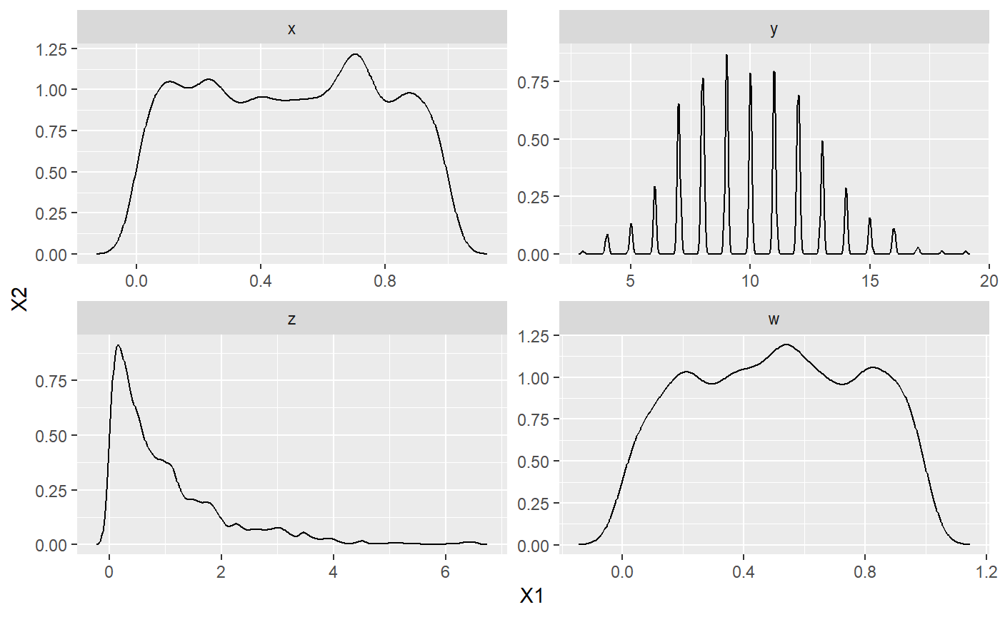
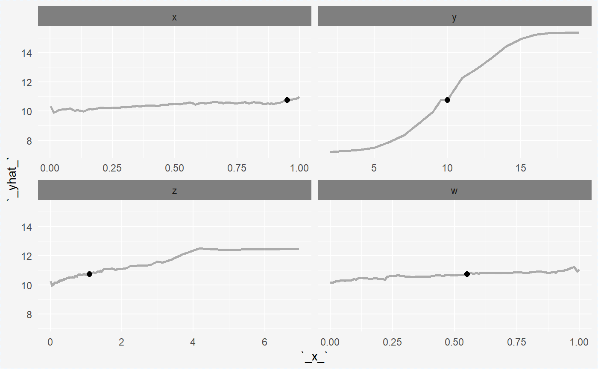
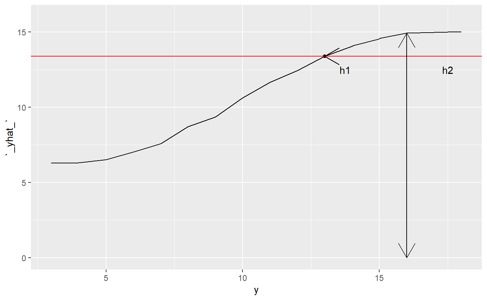

Measure - problems and possible solutions
Anna Kozak
2019-04-24
measure---problems-and-possible-solutions.RmdLet consider a example
\(X \sim U[0,1]\)
\(Y \sim Bin(40, 0.25)\)
\(Z \sim Exp(1)\)
\(W \sim U[0,1]\)
\(k = x*z + y.\)
Now, we check the plots of density for each variable. Density computed with kernel which is “gaussian” and bandwidth is “SJ”.

With ceteris_paribus function from ceterisParibus package we make a Ceteris Paribus profiles.

We use the LocalVariableImportanceViaOscillations function to calculate local importance measure. Measure is calculate as absolute deviation, a distance from point(new observation) and with weighted based on the density of variable. Moreover the kernel density parameter is equal “gaussian” and bandwith parameter is “SJ”.
LocalVariableImportanceViaOscillations(cp_rf, data, bw_density = "SJ")
#> Local Variable Importance Via Oscillations with parameters:
#> absolute_deviation = TRUE
#> point = TRUE
#> density = TRUE
#> kernel_density = gaussian
#> bw_density = SJ
#>
#> Results:
#> variable_name measure
#> 1 x 66.79525
#> 2 y 200.27958
#> 3 z 444.97052
#> 4 w 53.77998A few words about how we calculated measure with density now
Let see a picture

The picture shows ceteris parbius profile for variable, red line is a value yhat for observation which is explain. The \(h1 = h2 - yhat(observation)\) arrow shows an distance between ceteris paribus profiles and yhat for observation, \(h2\) arrow shows an distance between ceteris paribus profiles and yhat is equal zero. Let denote \(w\) as weight based on variable density. Now measure is calculated as \(h2 \cdot w - yhat(observation).\) Maybe we shoud calculated as \(h1 \cdot w.\)
Look at local variable importance measure when we calculated as \(h1\cdot w\). Now, the most important variable is \(y\), other vairables have low measure. When we calcuted as \(h2 \cdot w - yhat(observation)\) the most important was \(z\), then \(y\).
LocalVariableImportanceViaOscillations_1(cp_rf, data, bw_density = "SJ")
#> Local Variable Importance Via Oscillations with parameters:
#> absolute_deviation = TRUE
#> point = TRUE
#> density = TRUE
#> kernel_density = gaussian
#> bw_density = SJ
#>
#> Results:
#> variable_name measure
#> 1 x 38.157791
#> 2 y 154.673461
#> 3 z 22.015229
#> 4 w 9.874678